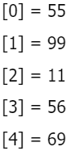
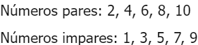
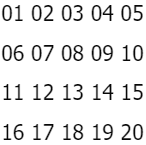
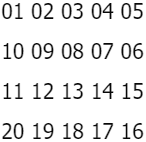

Taller #4 de Java
Aquí te presento el taller #4: Arreglos
1. Crear un vector de tipo Entero con 5 posiciones, llenarlo con información solicitada al usuario.
Después de recoger toda la información, se requiere imprimir el índice de cada posición en el arreglo
con su valor de la siguiente manera:

package pseint.taller.cuatro;
import javax.swing.JOptionPane;
/**
*
* @author Juan Osorio
*/
public class Uno {
/**
* @param args the command line arguments
*/
public static void main(String args[]) {
String mensaje = "";
int cantidad;
int[] numeros = new int[5];
for (int i = 0; i < numeros.length; i++) {
cantidad = Integer.parseInt(JOptionPane.showInputDialog("Digite un número:"));
numeros[i] = cantidad;
mensaje += "[" + i + "] = " + numeros[i] + "\n";
}
JOptionPane.showMessageDialog(null, mensaje);
}
}
2. Crear un arreglo de números enteros de 20 posiciones, el cual, debe ser llenado con números
aleatorios entre 1 y 100; después de haber llenado dicho arreglo, se debe volver a recorrer utilizando
un ciclo diferente al que se usó para llenarse e imprimir los números pares e impares. Ejemplo:

package pseint.taller.cuatro;
import java.util.Random;
import javax.swing.JOptionPane;
/**
*
* @author Juan Osorio
*/
public class Dos {
/**
* @param args the command line arguments
*/
public static void main(String args[]) {
String numAleatorios, pares, impares;
int indice, indice2, aleatorio;
int[] numeros = new int[20];
Random random = new Random();
numAleatorios = "";
pares = "";
impares = "";
indice = 0;
indice2 = 0;
for (int i = 0; i < numeros.length; i++) {
aleatorio = random.nextInt((100 - 1) + 1) + 1;
numeros[i] = aleatorio;
numAleatorios += aleatorio + ", ";
}
while (indice < 20) {
if (numeros[indice] % 2 == 0) {
pares += numeros[indice] + ", ";
}
indice += 1;
}
while (indice2 < 20) {
if (numeros[indice2] % 2 == 1) {
impares += numeros[indice2] + ", ";
}
indice2 += 1;
}
numAleatorios = numAleatorios.substring(0, numAleatorios.length() - 2);
pares = pares.substring(0, pares.length() - 2);
impares = impares.substring(0, impares.length()-2);
JOptionPane.showMessageDialog(null, "Números generados: " + numAleatorios + "\nPares: " + pares + "\nImpares: " + impares);
}
}
3. Imprimir los números primos del 1 al 1000, el resultado debe ser buscado de forma matemática.
package pseint.taller.cuatro;
/**
*
* @author Juan Osorio
*/
public class Tres {
/**
* @param args the command line arguments
*/
public static void main(String args[]) {
int p, contador, posicion;
boolean esPrimo;
int[] primos;
contador = 0;
posicion = 0;
for (int i = 0; i < 1000; i++) {
if (i <= 1 || i == 4) {
contador += 1;
} else {
for (int j = 2; j < i / 2; j++) {
if (i % j == 0) {
j = i;
contador += 1;
}
}
}
}
primos = new int[1000 - contador];
for (p = 0; p < 1000; p++) {
esPrimo = true;
if (p <= 1 || p == 4) {
esPrimo = false;
} else {
for (int j = 2; j < p / 2; j++) {
if (p % j == 0) {
esPrimo = false;
j = p;
}
}
}
if (esPrimo) {
primos[posicion] = p;
if (posicion < 1000 - contador) {
posicion += 1;
}
}
}
for (int i = 0; i < 1000 - contador; i++) {
System.out.println(primos[i]);
}
}
}
4. Dada la siguiente matriz bidimensional, el cual debe de quemar en el código:

Utilizando el conocimiento adquirido, a excepción de hacerlo de forma manual, imprima la siguiente
matriz bidimensional.

package pseint.taller.cuatro;
/**
*
* @author Juan Osorio
*/
public class Cuatro {
/**
* @param args the command line arguments
*/
public static void main(String args[]) {
int fila, columna;
String[][] matriz = new String[4][5];
String[][] matriz2 = new String[4][5];
matriz[0][0] = "01";
matriz[0][1] = "02";
matriz[0][2] = "03";
matriz[0][3] = "04";
matriz[0][4] = "05";
matriz[1][0] = "06";
matriz[1][1] = "07";
matriz[1][2] = "08";
matriz[1][3] = "09";
matriz[1][4] = "10";
matriz[2][0] = "11";
matriz[2][1] = "12";
matriz[2][2] = "13";
matriz[2][3] = "14";
matriz[2][4] = "15";
matriz[3][0] = "16";
matriz[3][1] = "17";
matriz[3][2] = "18";
matriz[3][3] = "19";
matriz[3][4] = "20";
for (fila = 0; fila < 4; fila++) {
for (columna = 0; columna < 5; columna++) {
System.out.print(matriz[fila][columna] + " ");
}
System.out.println(" ");
}
for (fila = 0; fila < 4; fila++) {
if (fila == 0 || fila == 2) {
for (columna = 0; columna <= 4; columna++) {
matriz2[fila][columna] = matriz[fila][columna];
}
} else if (fila == 1 || fila == 3) {
for (columna = 4; columna >= 0; columna--) {
matriz2[fila][columna] = matriz[fila][4 - columna];
}
}
}
System.out.println("");
for (fila = 0; fila < 4; fila++) {
for (columna = 0; columna < 5; columna++) {
System.out.print(matriz2[fila][columna] + " ");
}
System.out.println("");
}
}
}
5. Se debe de imprimir el siguiente cuadro:

El usuario deberá insertar la fila y columna de la cual desea ver el resultado, el resultado de cada
celda debe estar previamente calculado en una matriz bidimensional la cual cada resultado obedecerá a la
fila y columna insertada por el usuario.
package pseint.taller.cuatro;
import java.util.Scanner;
/**
*
* @author Juan Osorio
*/
public class Cinco {
/**
* @param args the command line arguments
*/
public static void main(String args[]) {
Scanner sc = new Scanner(System.in);
int[][] tabla = new int[10][10];
System.out.println(" Tabla de Multiplicar");
System.out.println("");
System.out.println(" COLUMNAS");
System.out.println("");
System.out.println(" 0 1 2 3 4 5 6 7 8 9");
System.out.println("");
System.out.println(" 0 1 x 1 2 x 1 3 x 1 4 x 1 5 x 1 6 x 1 7 x 1 8 x 1 9 x 1 10 x 1");
System.out.println("");
System.out.println(" 1 1 x 2 2 x 2 3 x 2 4 x 2 5 x 2 6 x 2 7 x 2 8 x 2 9 x 2 10 x 2");
System.out.println("");
System.out.println(" 2 1 x 3 2 x 3 3 x 3 4 x 3 5 x 3 6 x 3 7 x 3 8 x 3 9 x 3 10 x 3");
System.out.println("");
System.out.println(" 3 1 x 4 2 x 4 3 x 4 4 x 4 5 x 4 6 x 4 7 x 4 8 x 4 9 x 4 10 x 4");
System.out.println(" F");
System.out.println(" I 4 1 x 5 2 x 5 3 x 5 4 x 5 5 x 5 6 x 5 7 x 5 8 x 5 9 x 5 10 x 5");
System.out.println(" L");
System.out.println(" A 5 1 x 6 2 x 6 3 x 6 4 x 6 5 x 6 6 x 6 7 x 6 8 x 6 9 x 6 10 x 6");
System.out.println(" S");
System.out.println(" 6 1 x 7 2 x 7 3 x 7 4 x 7 5 x 7 6 x 7 7 x 7 8 x 7 9 x 7 10 x 7");
System.out.println("");
System.out.println(" 7 1 x 8 2 x 8 3 x 8 4 x 8 5 x 8 6 x 8 7 x 8 8 x 8 9 x 8 10 x 8");
System.out.println("");
System.out.println(" 8 1 x 9 2 x 9 3 x 9 4 x 9 5 x 9 6 x 9 7 x 9 8 x 9 9 x 9 10 x 9");
System.out.println("");
System.out.println(" 9 1 x 10 2 x 10 3 x 10 4 x 10 5 x 10 6 x 10 7 x 10 8 x 10 9 x 10 10 x 10");
System.out.println("");
System.out.println("");
for (int numFila = 1; numFila < 11; numFila++) {
for (int numColumna = 1; numColumna < 11; numColumna++) {
tabla[numFila - 1][numColumna - 1] = numFila * numColumna;
}
}
System.out.println("Digite el número de la fila");
int fila = sc.nextInt();
System.out.println("Digite el número de la columna");
int columna = sc.nextInt();
System.out.println("Resultado: " + tabla[fila][columna]);
}
}
Sobre mi
Administrador de redes de cómputo y sistemas teleinformáticos, mantenimiento de computadores, desarrollador de aplicaciones de escritorio, web y móviles.